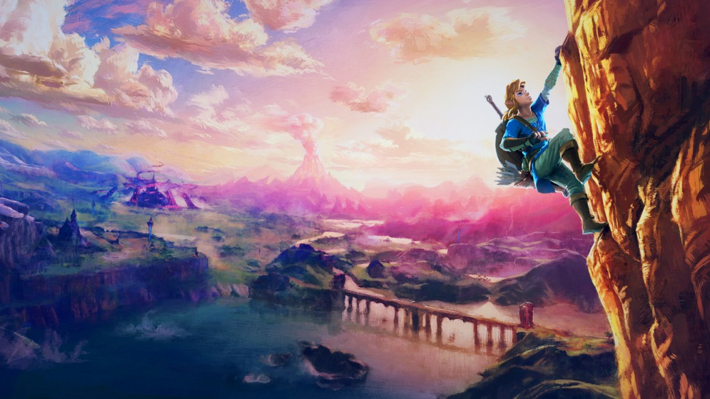
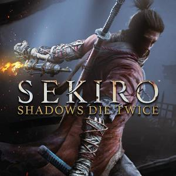
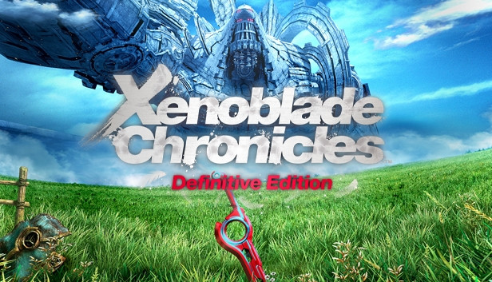

Zelda Breath of the wild

The Legend of Zelda: Breath of the Wild es un videojuego de acción-aventura de 2017 de la serie The Legend of Zelda. El jugador controla a Link, que despierta en un mundo postapocalíptico después de estar cien años durmiendo para derrotar a Ganon y salvar al reino de Hyrule.El juego presenta un mundo abierto que le permite al jugador encontrar distintas maneras de completar un objetivo y que la historia pueda ser completada de forma no lineal.
Sekiro: Shadows Die Twice

Sekiro: Shadows Die Twice es un videojuego de acción y aventura desarrollado por From Software. El juego fue lanzado el 22 de marzo de 2019 en las plataformas PlayStation 4, Xbox One y Microsoft Windows. El juego sigue a un shinobi del Período Sengoku, conocido como Lobo, que intenta vengarse de un clan de samuráis que atacó y secuestró a su maestro.
Xenoblade Chronicles

Xenoblade Chronicles, trata sobre el conflicto entre dos titanes legendarios, Bionis y Mechonis, que combatieron sin fin hasta quedar congelados y convertirse en el mundo entero. Miles de años después, los hombres viven en Bionis y las máquinas en Mechonis, quienes luchan en una cruenta guerra sin cuartel por la supremacía.